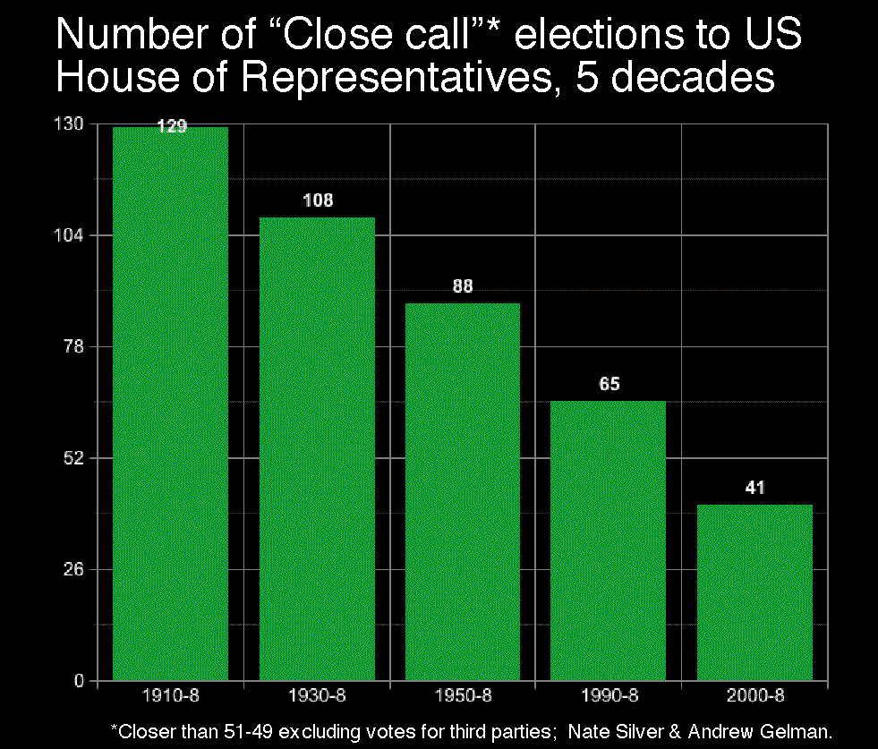

You've heard of two-party domination, caused by the repeated effect of voters not wanting to "waste their vote" on third party candidates, causing them to get vastly lower vote counts (lowering factors often exceed 10) and die out.
But in the USA, we more and more have one-party domination, evidenced by the fact that congressmen and state house members in most (all?) states get re-elected 98% of the time they try.
Over the decade 1995-2005, The Political Oddsmaker by Ron Faucheux (feature in Campaigns & Elections magazine) has made over 2,700 picks in U.S. Senate, gubernatorial, U.S. House, major mayoral and initiative elections, with an overall record of correctly predicting winners over 98.2 percent of the time. And I'm not talking about predictions based on looking at poll results 1 day before the election, and only in selected easy-to-pick races. No. I'm writing this in October 2005, and Faucheux has already posted his searchable database of nationwide predictions for the 2006 elections, over 1 year ahead of time!
But it is even worse than that. Suppose a state gets gerrymandered by the dominant party. Then that party can (if the gerrymandering is optimal – and with computers optimality is getting more and more approachable) stay in majority control permanently even with only 26% support. (It simply creates exactly two kinds of districts: those consisting 100% opposition party supporters, and those containing 51% their supporters.)
Now suppose you are a voter in one of those 100% opposition districts. Year after year, you elect an opposition party candidate. That fellow always is shouted down and loses in whatever he tries to do in the state house. Every time there is money to be distributed to districts, your district does not get it. This goes on year after year after year.
So along comes a candidate from the dominant party. He says to you: "I know you are opposed to what I stand for. But that does not matter because my party is dominant and always going to win statewide anyhow. What matters is, if you elect me, then your district will finally get some state money and your representative will finally be able to accomplish something to help your district."
That is a strong argument, isn't it? Kind of a "brute power counts, principles do not" argument. Trouble is, there is a lot of truth to it. And so, after year after decade of this happening, the dominant party solidifies more and more control over the state. The result is permanent one-party "machine" domination of that state. These machines can grow extremely corrupt, and they can be nearly impossible to remove. (Three notorious democratic-party machines were: Tammany in New York State, the Daley machine in Chicago, and the Parr machine in South Texas. The GOP in 2003 made their play to set up such a machine in Texas with an unprecedented district-redrawing in a non-census year.)
Incidentally, it is theoretically possible for this to happen on a nationwide scale, although in the USA it has not (yet). After his 2006 defeat, Rhode Island's senator Lincoln Chafee remarked that the main reason he was a member of the Republican party (which had enjoyed majority control of congress for almost all of the preceding 12 years) was because that allowed him to get money for Rhode Island.
Each of the two major parties argues "we need to gerrymander this state massively to counteract the evil opposing party's similar efforts in other states." Or argues "we need to make sure the election commissioner in this state is an ethics-challenged manipulative party loyalist for us (rather than an unbiased ethical person) because we need to counteract the evil opposing party's similar efforts in other states." Ultimate cumulative result: zero voter choice anywhere, one-party domination everywhere. Note that this pathological-feedback scenario is enabled by having a 2-party system in the first place, and that in turn is a consequence of the plurality voting system.
Thought 98% predictability was bad? On 28 June 2006, the US Supreme Court ruled that states could re-gerrymander themselves in any manner (no matter how biased) at any time – even one day before the election if they could manage that (well, that might be hard to manage for practical reasons) – and that all was totally constitutional. The only qualm they expressed was that the gerrymandering had better not be explicitly ethnicity/race-based (whatever that means), although presumably even those qualms will to a considerable extent no longer exist since the Voting Rights Act of 1965 was allowed to die without renewal shortly before the Supreme's decision. Later note: Sorry, that claim was premature and untrue. The bulk of the VRA was renewed in 2006, despite news reports indicating Republican efforts to derail this would be successful. (The Supreme's decision pertained to the 2003 Gerrymandering of Texas, which was conducted when the VRA was still in force.)
By conducting gerrymandering by computer (the computer knows the Democrat & Republican vote counts in every tiny precinct) one can argue that the gerrymander obviously was not explicitly set up to discriminate on the basis of race, since the computer didn't know anything about race, it only knew about politics. "Therefore," Q.E.D, every modern gerrymander is legal.
Presumably both parties will now go for maximum gerrymandering everyplace they can. If so, then consequently, "98%" will increase to over 99% and voter choice and democracy in the USA will probably be completely choked off for all district-based elections.
